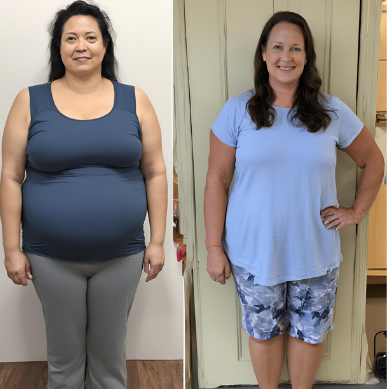

Témoignages-Régimes
Témoignages inspirants de nos clients ayant réussi leur régime avec succès
Nathalie Garnier- 57 ans
Avec les recettes de VitalVibe, j'ai réussi à perdre 15 kilos en cinq mois. Avant, je me sentais constamment fatiguée et insatisfaite de mon poids. Les recettes équilibrées m'ont aidée à réévaluer mes habitudes alimentaires sans me sentir restreinte. J'ai découvert de nouvelles saveurs et une façon plus saine de cuisiner. Chaque repas était un plaisir, et les résultats se sont rapidement manifestés. Non seulement j'ai perdu du poids, mais j'ai aussi gagné en confiance et en vitalité. Aujourd'hui, je me sens en meilleure santé et plus heureuse, tout cela grâce à VitalVibe.
Jérome Park- 50 ans

Grâce aux recettes de VitalVibe, j'ai perdu 20 kilos en six mois. Avant de découvrir ce programme, je luttais constamment contre mes mauvaises habitudes alimentaires et une prise de poids continue. Les recettes proposées étaient non seulement délicieuses mais aussi faciles à préparer. Elles m'ont permis de manger équilibré sans me sentir privé. J'ai appris à apprécier des aliments sains et à les intégrer dans mon quotidien. Avec le soutien de la communauté VitalVibe et les conseils nutritionnels, j'ai retrouvé une nouvelle énergie et une meilleure forme physique. Merci à toute l'équipe pour ce changement de vie incroyable.
Emma Mourisson- 32 ans
Depuis que j'ai découvert les recettes de VitalVibe, ma vie alimentaire a complètement changé. Les plats équilibrés et savoureux m'ont permis de faire des choix plus sains sans sacrifier la satisfaction. Je me sens mieux dans ma peau, plus énergique, et je suis ravie de pouvoir cuisiner des repas qui sont à la fois nourrissants et délicieux.